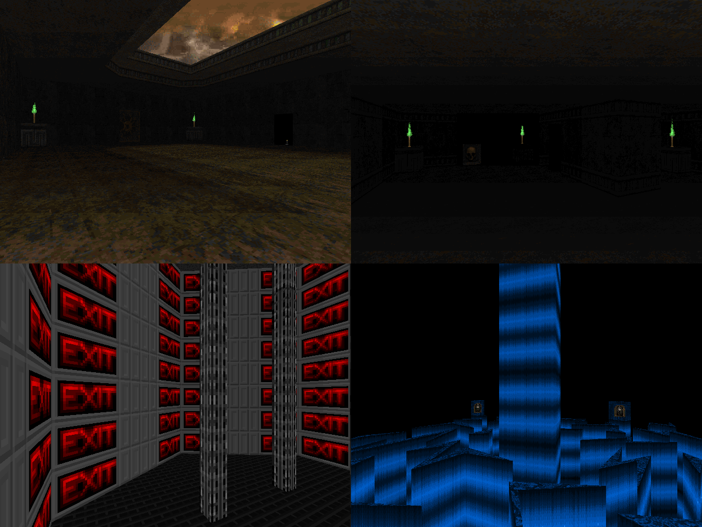

DOWNLOAD LINKS



| Year | 2024 |
| IWAD | Doom II |
| Source port | MBF21-compatible |
| Game mode(s) | Single-player |
| Map(s) contributed | MAP17, MAP21, MAP31 |
| Other contributions | Graphics, project lead, title & text screen music, UMAPINFO |
McDoomguy's Slaughterific Sample Platter is a 42-level selection of MBF21-compatible maps, born
as a community project hosted by Yours Truly. Announced towards the tail-end of February 2024, mappers
interested in contributing had to pick from a selection of design restrictions - some inspired by well-known
CPs of the past, others invented specifically for this project. On offer were such restrictions as
"100 lines or less", "1024x1024 map size", "a bunch of explosive barrels" and "pacifist map", for instance.
I myself made three maps for the project, occupying the MAP17, MAP21 and MAP31 slots. In order of appearance,
the map titles are "Egypt Map", "Exit Less" and "Tightrope II: Electric Fuckaloo". "Egypt Map" is a (not quite)
Egyptian-themed pacifist map where you have to press five switches to unlock the exit while avoiding arch-viles
and crushers, "Exit Less" is a hexagonal puzzle map, and "Tightrope II: Electric Fuckaloo" is a sequel to
"Tightrope" from 3x3: Take Two, a compact platforming map where the exit is unlocked
by pressing three switches. Try not to fall to your death while doing so.
In addition to making the aforementioned maps, I handled the usual community project lead duties: curating,
compiling and testing the thing. I also made the graphics and wrote the UMAPINFO, and the MIDI that plays
during the title screen and ending text is a bespoke one for the project by myself.